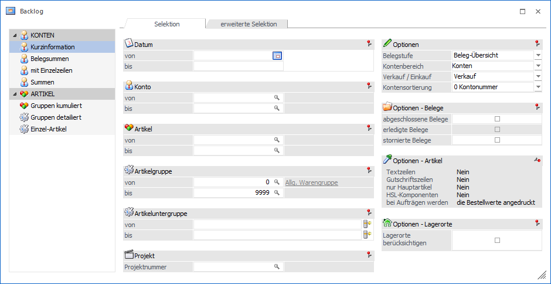
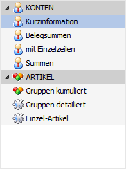
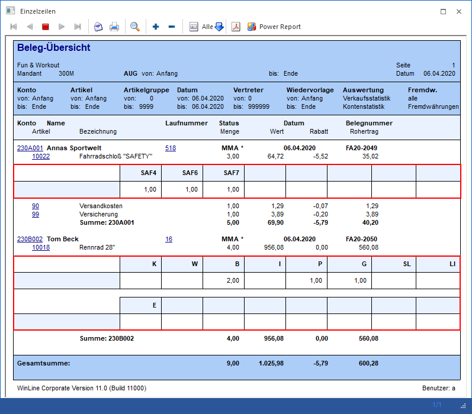

Im linken Bereich des Fenster steht die Auswahl der Auswertungsmethode zur Verfügung.
Hinweis
Die Auswertungsmethode beeinflusst die Ausgaben "Ausgabe Bildschirm" und "Ausgabe Drucker". Bei allen anderen Ausgabeformen wird automatisch "Konten - mit Einzelzeilen" bzw. "Artikel - Einzel-Artikel" verwendet, d.h. es werden die Daten unkomprimiert dargestellt.

Auswertungsmethode

Die unterschiedlichen Auswertungsmethoden werden in Form einer Tabelle dargestellt. Durch Anwahl einer Methode werden im Register Selektion (Bereich "Optionen - Artikel") unterschiedliche Optionen zur Verfügung gestellt.
Ø Konten
Durch Auswahl einer Auswertungsmethode von "Konten" wird automatisch eine kunden- / lieferantenbezogene Auswertung erstellt und keine artikelbezogene. Folgende Varianten stehen zur Verfügung:
ü Kurzinformation
Bei der
Kurzinformation werden für alle Kunden bzw. Lieferanten alle erfassten Belege
zusammengefasst. Neben der Kunden- bzw. Lieferantennummer und des Namens werden
nur die Informationen Menge, Wert und Rabatt angezeigt. Es ist aber in dieser
Auswertung nicht erkennbar, wie viele und welche Belege der Auswertung zugrunde
liegen.
ü Belegsummen
Bei den Belegsummen
werden neben Kunden- bzw. Lieferantennummer und -namen die Information
Laufnummer, Status, Datum, Menge, Wert und Rabatt angezeigt.
ü mit Einzelzeilen
Hier werden zu
den Informationen der Belegsummen die Artikeleinzelzeilen mit Menge, Wert und
Rabatt angezeigt.
Hinweis
Für Ausprägungen ist es möglich eine tabellarische Druckvariante zu nutzen. Hierfür muss in den Ausprägungsoptionen (Register "Drucken") die Verwendung des Subformulars (pro Artikeltyp) aktiviert werden.
Beispiel

ü Summen
Bei der Option "Summen"
werden alle Belege für alle Kunden / Lieferanten zusammengefasst, d.h. man
erhält eine Gesamtsumme über die Mengen und Beträge sämtlicher Beleg der
selektierten Belegstufe.
Ø Artikel
Durch Auswahl einer Auswertungsmethode von "Artikel" wird automatisch eine artikelbezogene Auswertung erstellt und keine kunden- / lieferantenbezogene. Folgende Varianten stehen zur Verfügung:
ü Gruppen kumuliert
Für jede
Artikelgruppe wird eine Zeile angedruckt, in der alle Einzelartikel
zusammengefasst werden.
ü Gruppen detailliert
Es werden
alle Einzelartikel, sortiert nach Artikelgruppe, angedruckt.
ü Einzel-Artikel
Für jeden
Artikel werden alle Einzelzeilen angedruckt, in der auch die Kunden- und
Belegnummer ersichtlich ist.